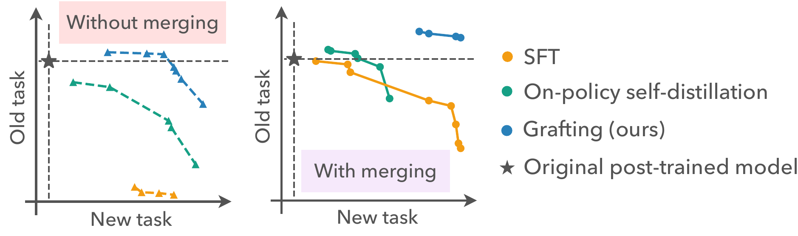
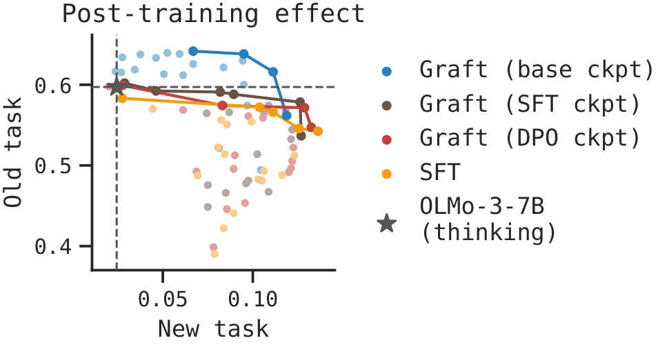
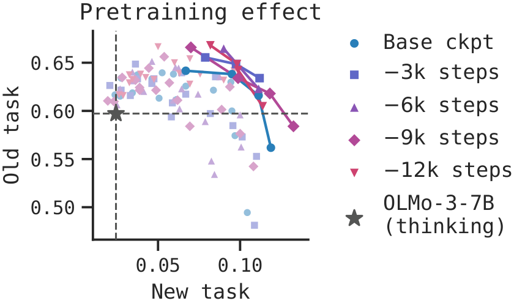
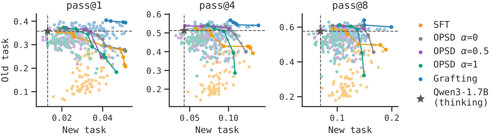
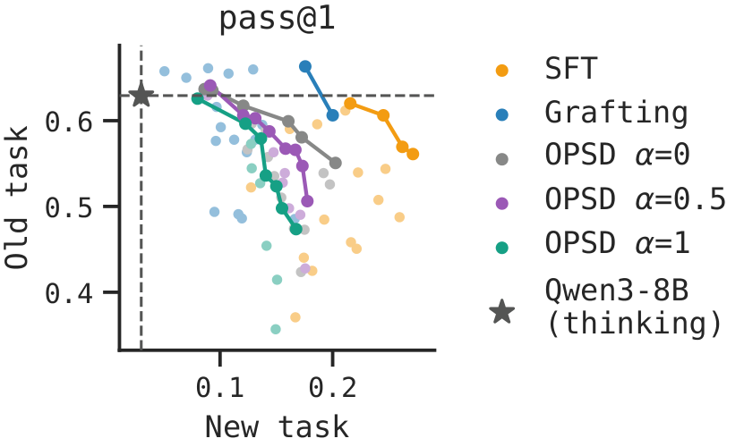
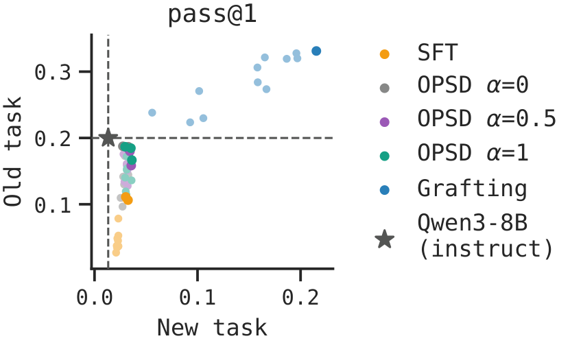
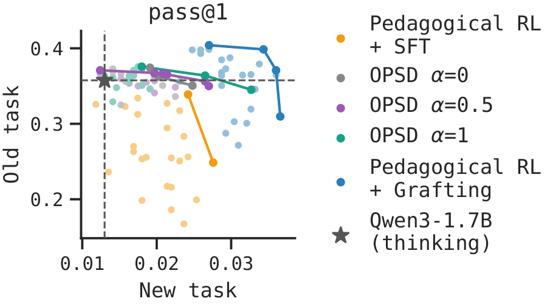
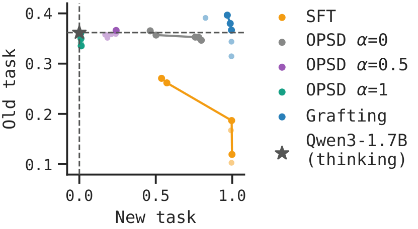

Off-Policy Merging Beats On-Policy
Self-Distillation for Continual Learning
Carnegie Mellon University
1. Off-policy = forgetting?
A long-standing goal of AI is a model that continually learns and improves itself. Today's models are heavily post-trained with RL, but supervised finetuning (SFT) on new data often causes forgetting and fails to generalize. On-policy training, where the model learns from its own current behavior, has shown better retention (Chen et al., 2025). This motivates the view that continual learning needs to be on-policy.
However, the data that carry new knowledge or capabilities are usually off-policy: new facts after the pretraining cutoff, expert demonstrations, and synthetic data for self-improvement. These are precisely the data we want the model to learn from.
To bridge this gap, many works try to make the data or learning signal more on-policy, e.g., on-policy self-distillation (OPSD), Pedagogical RL, and SFT with sampling.
But these approaches do not always preserve existing capabilities. Recent work finds that privileged self-distillation can suppress uncertainty and hurt out-of-domain reasoning (Kim et al., 2026), or reduce verification and backtracking in thinking models (Kaur et al., 2026).
What if on-policy training is not necessary?
2. Model merging alone mitigates forgetting
We first find that simply merging the SFT model back toward the original post-trained model, θmerge = (1 − λ) θpost + λ θ′post, makes SFT a strong baseline. Without merging, neither SFT nor OPSD beats the post-trained model. With merging, SFT generalizes much better, and OPSD loses its edge over SFT despite its expensive on-policy sampling.

3. Grafting
We see that model merging largely mitigates forgetting of existing capabilities, but why does forgetting happen in the first place?
Training on narrow distributions (e.g., post-training, or even late pretraining) skews which task a model infers its inputs to come from (Kotha et al., 2024). So finetuning later checkpoints routes more of the new learning signal to the parameters that support existing capabilities. This suggests learning the update on an earlier checkpoint instead. But how?
Task arithmetic (Ilharco et al., 2023) shows that an update need not be derived from the model it is applied to. Based on this, we change where the update is learned and how it is applied. We call the method grafting:
- learn the update on an earlier donor model θdonor;
- scale the weight update by λ and apply it to the post-trained model;
- optionally, mask the most sensitive weight directions (estimated with the Fisher information on old-task data) when the new data distribution is far from the post-trained model.
θ(λ, ρ) = θpost + λ · Mρ ⊙ (θdonor-ft − θdonor)
Here θdonor-ft is the donor after finetuning on the new data, and the mask Mρ zeroes the top-ρ fraction of Fisher-weighted directions of the update. In our experiments, masking at most 1% of directions is enough.
Which donor model?
We want a donor that is early enough to see less interference, but late enough to stay close to the final model. OLMo-3 releases many intermediate checkpoints, which lets us study this. Each post-training stage (SFT, DPO, RL) makes the model harder to finetune, and the best donor sits before the end of pretraining.


4. Results
We study settings where off-policy data arises naturally.
In all settings, we assume access only to the data, not to the weights or logits of a stronger teacher, so on-policy distillation from a teacher is not possible. New-task performance is measured on held-out data from the new task; old-task performance is the mean over AIME 2024, AIME 2025 and HMMT 2025. All methods receive the same merging sweep in the comparisons below.
4.1 Math
For math, the question is where the thinking traces come from, and we study two sources:
- Distillation from expert traces. On hard problems the model rarely solves, we can learn from a stronger model by doing SFT on its traces. We use traces written by DeepSeek-V4-Pro. Their reasoning may differ substantially from the student's, making forgetting a concern.
- Self-improvement with Pedagogical RL. Solutions from humans or expert systems rarely come with thinking traces. Pedagogical RL trains a copy of the model that sees the reference solution to write traces the student can learn from, then uses a student-likelihood-weighted imitation step. In our experiment, we compare SFT on Pedagogical RL traces with grafting on the same Pedagogical RL traces, and show that grafting performs substantially better.
Distillation from expert traces



Grafting improves the joint old/new-task frontier over SFT and OPSD. The gains persist when allowing multiple attempts and in non-thinking mode. OPSD offers little improvement in old-task generalization over the original thinking models.
Self-improvement with Pedagogical RL

Learning the same generated traces with grafting instead of SFT improves both new-task performance and generalization to old tasks. Grafting also outperforms OPSD.
4.2 Knowledge injection
For knowledge injection, we study facts absent from prior training, such as new facts that emerge after the pretraining cutoff. We use invented entities so that no fact can leak from pretraining, and the question-answer form is far from how a reasoning model writes. We therefore expect this to be a particularly demanding test of retaining its math capabilities.

SFT learns the new facts but forgets existing math capabilities. OPSD largely retains those capabilities but learns fewer facts. Grafting learns nearly all the facts while keeping old-task performance at or above that of the original model.
5. Making off-policy learning work
Off-policy data are a natural part of continual learning. When direct SFT fails, converting these data into on-policy signals is one response. Our results show that improving how the weight update is learned and applied is another, and can be more effective.
We hope this encourages more work on making off-policy learning work, rather than treating it as a difficulty to bypass.